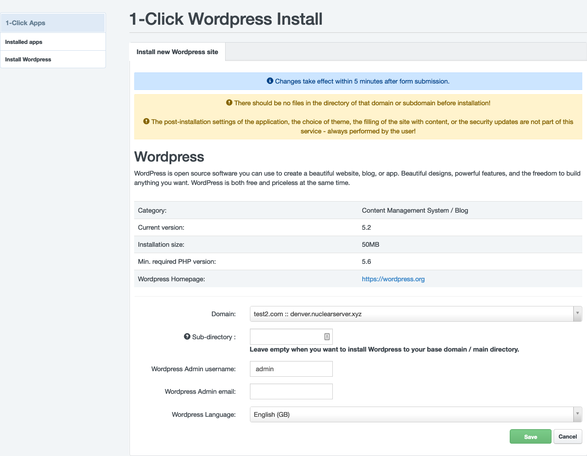

1-Click Apps Installer
1-Click Apps Installer a tool which allows you to install a most common and most favourite OpenSource CMS by one click to your domain.
Currently, we are supporting only Wordpress installation, however another CMS system will be added shortly.
1-Click Apps Installer overview
Log in to your Hosting Control Panel account and click on the 1-Click Apps located on the top menu.

In the list you can see all your apps installation, both sucessful or not.
Wordpress
Requirements
To install a Wordpress you need to meet some requirements on domain hosting: - Website is active (is not disabled / in-active) - PHP is enabled - PHP version is same or higher than min. required - Enough free disk space
Tip
We recommend to install Wordpress to the empty directory, otherwise, the old files will be backed up automatically.
Installation
To install a Wordpress click on the Install Wordpress link in the left-hand menu. The Wordpress version which will be installed is shown in the table. Also, the minimum required PHP version. Install a wordpress to website with lower PHP version than is min. required is not possible.
Now, choose a domain where you want to install Wordpress to. You can also specify a sub-directory (eg. yourdomain.tld/my-wordpress). If you do not want to install Wordpress into sub-directory, leave the Sub-directory field empty. Enter your admin username, your admin e-mail address (e-mail must be existing and working - to this address you will receive admin credentials to Wordpress admin panel) and choose a Wordpress language. Now just click on the Save button.

The installation status you can check in the list of installed packages in the Status column.
Removal / Un-Installation
If you want to remove previous Wordpress installation made by 1-Click Installer, just click on the red bin button in the list of installed 1-Click apps. All data (FTP, MySQL) will be permanently deleted.